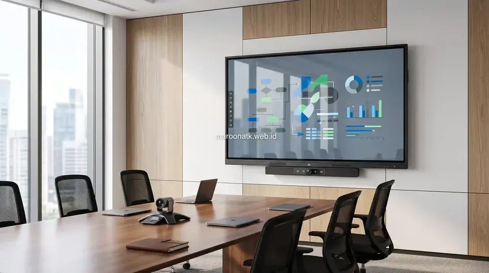
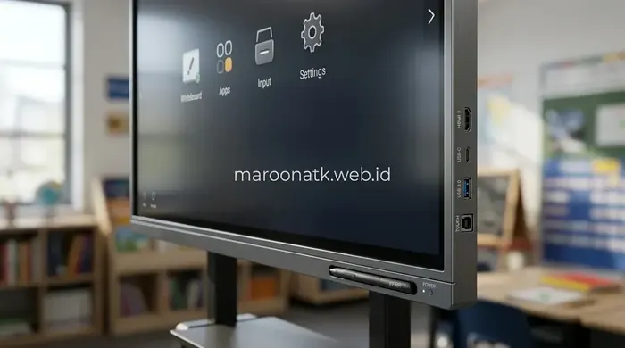

Mengapa Smart Classroom Membutuhkan Interactive Flat Panel?
Langkah pengadaan interactive flat panel sekolah merupakan investasi kunci dalam transformasi smart classroom, menghadirkan layar sentuh resolusi tinggi yang menggabungkan proyektor, papan tulis digital, sistem audio, dan konektivitas nirkabel ke dalam satu perangkat yang mudah dioperasikan oleh guru tanpa pelatihan berbelit-belit.
Dunia pendidikan saat ini terus bergerak menuju metode pembelajaran yang lebih partisipatif dan visual. Banyak yayasan, sekolah internasional, hingga institusi pendidikan negeri menghadapi tantangan serupa: teknologi proyektor lama sering kali redup di siang hari, bayangan tubuh guru menutupi materi presentasi, serta ketergantungan pada kabel HDMI yang kerap bermasalah.
Kehadiran interactive flat panel sekolah memberikan solusi menyeluruh bagi ruang kelas modern. Dengan layar sentuh berteknologi anti-glare dan sudut pandang lebar, materi pelajaran dapat terlihat jernih dari segala sudut kelas tanpa perlu meredupkan lampu ruangan. Siswa dapat lebih fokus, sementara pengajar memiliki sarana interaktif untuk menampilkan video edukasi, simulasi 3D, hingga kuis interaktif secara instan.

Mengenal Apa Itu Interactive Flat Panel (IFP) dan Fungsinya
Penjelasan fundamental mengenai cara kerja layar pintar interaktif dan manfaatnya bagi presentasi visual.
Fitur Utama yang Menjawab Kebutuhan Guru dan Manajemen Sekolah
Tantangan terbesar dalam adopsi teknologi di sekolah adalah resistensi pengajar terhadap perangkat yang terlalu rumit. Oleh karena itu, spesifikasi interactive flat panel untuk lingkungan pendidikan difokuskan pada kemudahan penggunaan dan ketahanan fisik:
1. Digital Whiteboard Instan Tanpa Booting Lama
Begitu layar dinyalakan, guru dapat langsung membuka aplikasi papan tulis digital cukup dengan satu ketukan. Pengajar dapat menulis menggunakan stylus pen maupun jari dengan responsivitas halus, memilih warna pena, menyisipkan bentuk geometri, hingga menghapus tulisan cukup dengan usapan telapak tangan (palm rejection & gesture erase).
2. Wireless Screen Sharing dari Berbagai Perangkat
Fitur berbagi layar nirkabel memungkinkan guru maupun siswa menampilkan tugas dari laptop Windows, MacBook, tablet iPad, maupun smartphone Android ke layar utama tanpa kabel. Mode split-screen bahkan memungkinkan hingga 4 tampilan tugas siswa disandingkan bersamaan untuk sesi diskusi kelompok.
3. Penyimpanan Catatan & Distribusi QR Code
Seluruh catatan materi dan coretan selama sesi pelajaran dapat langsung disimpan ke dalam format PDF atau gambar. Siswa tidak perlu lagi terburu-buru menyalin tulisan di papan; mereka cukup memindai (scan) QR Code yang muncul di layar untuk mengunduh seluruh rangkuman materi ke perangkat masing-masing.

Layar sentuh presisi tinggi dengan konektivitas port depan memudahkan akses flashdisk dan laptop pengajar secara praktis.
4. Kaca Pelindung Anti-Benturan (Tempered Glass)
Aktivitas di ruang kelas sekolah memerlukan ketahanan fisik yang tinggi. Panel layar IFP pendidikan umumnya dilindungi oleh lapisan kaca tempered berkekuatan 7H yang tahan terhadap benturan ringan, goresan pulpen, serta mudah dibersihkan dari debu dan noda bekas sentuhan tangan siswa.

Mengenal Papan Tulis Digital Smart Board untuk Ruang Rapat & Edukasi
Ulasan komparasi fungsional papan tulis digital interaktif dalam menunjang kolaborasi modern.
Tabel Komparasi: Proyektor Konvensional vs Interactive Flat Panel
Berikut matriks perbandingan antara fasilitas ruang kelas berbasis proyektor tradisional dan Interactive Flat Panel modern:
| Parameter Pembanding | Proyektor & Whiteboard Standar | Interactive Flat Panel (IFP) | Keuntungan untuk Sekolah |
|---|---|---|---|
| Kejelasan Visual | Gambar memudar di ruangan terang, lampu harus dimatikan | Layar 4K terang dengan lapisan anti-pantulan cahaya | Kelas tetap terang, siswa tidak mengantuk saat belajar |
| Interaktivitas Layar | Satu arah / statis, bayangan tubuh menutupi sorotan cahaya | Multi-touch point responsif hingga 20–40 sentuhan serentak | Guru dan siswa dapat berinteraksi bersamaan di layar |
| Konektivitas Kabel | Memerlukan kabel VGA/HDMI panjang yang rentan rusak | Wireless screen sharing nirkabel dari laptop & gadget | Meja guru rapi, tidak ada risiko tersandung kabel |
| Perawatan & Usia Pakai | Perlu penggantian lampu proyektor dan pembersihan filter berkala | Panel LED tahan hingga puluhan ribu jam pemakaian | Bebas biaya penggantian lampu berkala, minim perawatan |
| Sistem Suara | Speaker internal kecil, perlu tambahan speaker aktif eksternal | Speaker stereo bertenaga terintegrasi di bodi unit | Audio video terdengar jelas ke seluruh penjuru kelas |

Faktor yang Mempengaruhi Harga Interactive Flat Panel Jakarta Terbaru
Analisis faktor pembentuk harga IFP: ukuran layar 65/75/86 inch 4K, modul OPS, standing bracket, dan garansi resmi.
Pertimbangan Teknis dan Layanan Purna Jual Pengadaan
Bagi tim pengadaan dan manajemen yayasan pendidikan, memilih perangkat IFP yang tepat memerlukan evaluasi menyeluruh terhadap aspek operasional dan purna jual:
- Pemilihan Ukuran Sesuai Dimensi Kelas: Sesuaikan ukuran layar dengan kapasitas ruang. Ukuran 65 inci ideal untuk ruang lab kecil/ruang diskusi (15–20 orang), sedangkan ukuran 75–86 inci sangat dianjurkan untuk ruang kelas besar (30–40 orang).
- Pilihan Bracket Dinding vs Mobile Stand: Bracket dinding memberikan instalasi permanen yang rapi dan aman, sementara penggunaan mobile trolley stand beroda memudahkan pemindahan perangkat antar ruangan sesuai jadwal praktikum.
- Uji Coba Unit Demo: Memastikan penyedia memiliki layanan unit demo agar para guru dan staf IT sekolah dapat mencoba langsung kemudahan antarmuka sebelum keputusan pengadaan final.
- Garansi Resmi dan Dukungan Teknisi: Pastikan penyedia memberikan jaminan garansi resmi 1–3 tahun untuk panel dan komponen elektronik, serta ketersediaan teknisi internal yang siap membantu pendampingan instalasi.
Konsultasi Pengadaan Smart Board Sekolah Anda
Dapatkan Jadwal Demo Produk, Rekomendasi Ukuran Layar & Penawaran Resmi
Konsultasikan kebutuhan smart classroom sekolah atau kampus Anda bersama tim spesialis Interactive Flat Panel MAROON ATK.
Kesimpulan: Investasi Pendidikan untuk Generasi Masa Depan
Rangkuman Poin Kunci
Transformasi smart classroom dengan Interactive Flat Panel membawa pengalaman belajar yang jauh lebih dinamis dan efisien bagi ekosistem sekolah.
- Kemudahan Adopsi: Antarmuka digital intuitif memungkinkan guru langsung mengajar tanpa kurva belajar rumit.
- Keterlibatan Siswa: Pembelajaran visual beresolusi 4K dan interaksi layar sentuh meningkatkan antusiasme kelas.
- Keberlanjutan Perangkat: Struktur kokoh tempered glass dan panel LED berumur panjang memberikan nilai guna berkelanjutan.
Pertanyaan Umum (FAQ) Pengadaan IFP Sekolah
Interactive Flat Panel menggabungkan layar beresolusi 4K anti-glare, digital whiteboard responsif tanpa bayangan tubuh guru, audio terintegrasi, dan koneksi nirkabel tanpa kabel rumit, sehingga kelas tetap terang dan pembelajaran jauh lebih interaktif.
Ya, IFP modern dirancang dengan antarmuka yang sangat intuitif menyerupai tablet besar. Fitur papan tulis digital dapat langsung digunakan cukup dengan satu sentuhan tanpa perlu konfigurasi komputer yang rumit.
Ukuran 65 inci cocok untuk kelas kecil berkapasitas 15–25 siswa. Untuk kelas standar berkapasitas 25–40 siswa, ukuran 75 inci atau 86 inci sangat disarankan agar materi terbaca jelas hingga barisan paling belakang.
Hal penting meliputi evaluasi kestabilan daya listrik ruang kelas, ketersediaan jaringan Wi-Fi sekolah, pemilihan sistem instalasi (wall mount kokoh atau mobile trolley stand), ketersediaan unit demo, serta kepastian garansi resmi dan dukungan teknisi purna jual.

Arby Ardiansyah
Praktisi teknologi pengadaan B2B berpengalaman lebih dari 5 tahun dalam digitalisasi fasilitas pendidikan, implementasi smart classroom, dan standardisasi perangkat interaktif di Indonesia.